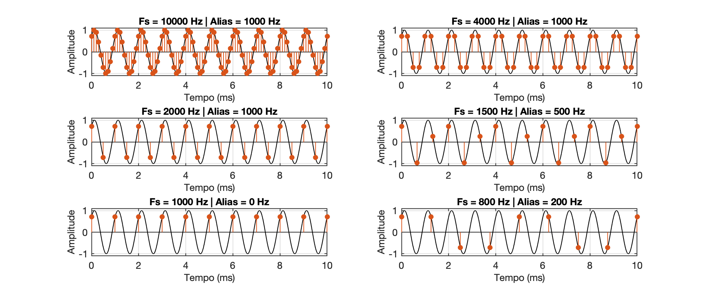

Simular Aliasing1. O Experimento2. Código completo para MATLAB / Octave3. O que você vai ouvir?5. Resultados da simulação6. Sistema de Aquisição de Dados
Amostrar uma senóide de 1 KHz, mas com diferentes taxas (frequências) de amostragem e observar o que ocorre. Observar o efeito de aliasing.
Onda senoidal:
A frequência de Nyquist exige:
Podemos experimentar as seguintes taxas:
| Frequência de amostragem | Resultado esperado |
|---|---|
| 800 Hz | Aliasing: 200 Hz |
| 1.000 Hz | Amostragem degenerada: zero, para fase inicial zero |
| 1.500 Hz | Aliasing: 500 Hz |
| 2.000 Hz | Frequência de Nyquist: sequência alternada, dependendo da fase |
| 4.000 Hz | Reprodução correta: 1 kHz |
| 10.000 Hz | Reprodução correta: 1 kHz |
Observação:
Um detalhe interessante: exatamente na frequência de Nyquist, uma senoide com fase inicial zero (sem defasagem) pode produzir somente zeros, pois:
Isso não significa que a amostragem de Nyquist seja necessariamente incapaz de representar o sinal: a fase da senoide determina o que pode ser recuperado deste sinal.
A idéia é mostrar os gráficos temporais, o espectro do sinal amostrado e tentar ouvir o sinal amostrado.
Para ouvir o sinal gerado no Matlab/Octave, podemos usar o comando:
xxxxxxxxxxsound(y, Fs, nBits)onde y é o vetor de entrada. Se possuir 2 dimensões o Matlab/Octave o sinal como sendo estéreo. Nós só vamos gerat um vetor de 1 dimensão de Fs= frequência de amostragem à ser usada. Se não especificada o Matlab considera que é de 8192 Hz. E nBits corresponde à quantidade de bits (resolução) a ser usada. É um parâmetro opcional.
Neste caso, vamos fixar a taxa de amostragem do comando sound em 44100 Hz que a taxa usda normalmente em sinal de aúdio, qualidade de CD.
O detalhe é que tanto o Matlab quanto o Octave possuem restrições para a menor frequência de amostragem que pode ser usada com o comando sound. Para ao Matlab é 8192 e para o Octave é 8000 Hz.
Então nõa podemos simplesmente repassar o vetor amostrado para o comando sound.
A solução proposta é simular o que faz o conversor D/A de um sistema deigital real. Ele retêm (“sustenta”) valores amostrados durante o periodo de tempo em que novas amostras não seriam geradas, simulando o que se conhece como Sustentador de ordem zero (Zero-Order Hold – ZOH).
O código que será repassado para testar o efeito de diferentes taxas de amostragem da senóide já está organizado de forma a realizar esta sustentação.
A ideia então é:
sound().Assim, mantemos a duração temporal original do experimento, mas conseguimos ouvir a frequência aparente produzida pelo processo de amostragem.
O código abaixo não exige Signal Processing Toolbox nem pacotes adicionais.
Script: sim_aliasing.m:
clear; close all; clc;
% Senoide originalf0 = 1000; % Frequencia original (Hz)T = 0.5; % Duracao (s)phi = pi/4; % Fase inicial
% Frequencia de reproducao do audioFa = 44100;
% Frequencias de amostragem a experimentarFs_list = [800 1000 1500 2000 4000 10000];
% Sinal original em alta resolucaota = (0:1/Fa:T-1/Fa)';x_original = sin(2*pi*f0*ta + phi);
% Reproducao da senoide originaldisp('Senoide original: 1 kHz');sound(x_original, Fa);pause(T+0.3);
% Graficosfigure;
for i = 1:length(Fs_list)
Fs = Fs_list(i);
% Amostragem n = 0:ceil(T*Fs)-1; ts = n/Fs; xs = sin(2*pi*f0*ts + phi);
% Frequencia aparente (alias) f_alias = abs(mod(f0 + Fs/2, Fs) - Fs/2);
fprintf('Fs = %5d Hz | Alias = %7.1f Hz\n', ... Fs, f_alias);
% Reconstrucao por Zero-Order Hold % Cada amostra permanece constante ate a proxima idx = floor(ta*Fs) + 1; idx(idx > length(xs)) = length(xs);
x_audio = xs(idx);
% Graficos: primeiros 10 ms subplot(3,2,i);
tplot = (0:1/Fa:0.01)'; xplot = sin(2*pi*f0*tplot + phi);
plot(tplot*1000, xplot, 'k'); hold on; stem(ts(ts <= 0.01)*1000, ... xs(ts <= 0.01), 'filled');
grid on; axis([0 10 -1.1 1.1]);
title(sprintf('Fs = %d Hz | Alias = %.0f Hz', ... Fs, f_alias));
xlabel('Tempo (ms)'); ylabel('Amplitude');
% Reproducao do sinal amostrado fprintf('Reproduzindo Fs = %d Hz...\n', Fs);
sound(x_audio, Fa); pause(T+0.3);
endA parte que sustenta o sinal durante certos intervalos corresponde ao trecho:
idx = floor(ta*Fs) + 1;x_audio = xs(idx);Ele é o responsável por reproduzir a sustentação de ordem zero.
Por exemplo, se a frequência de amostragem for 800 Hz, cada amostra será mantida durante:
O sinal resultante parece uma “escadaria”, mas sua componente fundamental vai variar conforme a taxa de amostragem sendo testada.
Observações referentes ao código anterior:
- Foi introduzida uma defasagem na onda senoidal para evitar a amostragem os pontos em que a senóide passa por zero se a mesma for amostrada à 1 KHz ou 2 KHz. Nestes casos, o sinal amostrado seria nulo (nível DC nulo). Você pode alterar este valor para comprovar este efeito. Ver linha
fase = deg2rad(45);que estipula uma defasagem de. A função deg2rad()simplesmente converte de graus para radianos, necessário posteriormente na funçãosin().
- A função ceil presente no código anterior arredonda cada elemento de um array para o inteiro mais próximo que é maior ou igual ao elemento original, arredondando em direção ao infinito positivo. Para valores positivos, isso significa arredondar para cima; para valores negativos, o arredondamento ocorre em direção a zero (por exemplo,
ceil(-2.7)resulta). - A função floor arredonda os elementos de um array para o inteiro mais próximo menor ou igual ao valor original, efetivamente arredondando em direção ao infinito negativo (−∞). A sintaxe básica é
Y = floor(X), ondeXé a entrada escalar, vetorial ou matricial. Para números positivos, o comportamento é semelhante à truncagem (ex:floor(3.7)retorna3), mas para números negativos, ela arredonda para um valor mais negativo (ex:floor(-3.2)retorna-4).
Resultados esperados com o código anterior
| Amostragem | Frequência aparente (o que será ouvido) | O que será ouvido |
|---|---|---|
| 800 Hz | 200 Hz | Tom grave |
| 1.000 Hz | 0 Hz | Praticamente silêncio (DC) |
| 1.500 Hz | 500 Hz | Tom intermediário |
| 2.000 Hz | 1.000 Hz | Tom original, mas com forma reconstruída diferente |
| 4.000 Hz | 1.000 Hz | Tom original |
| 10.000 Hz | 1.000 Hz | Tom original, reconstrução mais suave |
Observe especialmente os casos de 800 e 1500 Hz. Embora a senoide original seja sempre de 1 kHz, a reprodução apresenta frequências de 200 e 500 Hz, respectivamente.
Uma ressalva: o sinal reproduzido por ZOH não é uma senoide perfeita. É uma forma de onda com “degraus”, que contém harmônicas adicionais. Isso é interessante didaticamente, pois também permite discutir a reconstrução do sinal.
Observação:
Pode ser mais interessante: manter a senoide de 1 kHz e variar continuamente a frequência de amostragem, mas iniciando de uma frequência mais alta para uma mais baixa.
Por exemplo:
Será mais fácil perceber que a frequência aparente começa a se comportar de maneira diferente quando atravessamos a frequência de Nyquist.
Há também uma boa oportunidade para discutir uma questão conceitual: o aliasing não é simplesmente uma distorção da forma de onda; é uma ambiguidade na representação das frequências do sinal amostrado.
Para complementar, vale mostrar a documentação oficial:
xxxxxxxxxx>> sim_aliasingSenoide original: 1 kHzFs = 10000 Hz | Alias = 1000.0 HzReproduzindo Fs = 10000 Hz...Fs = 4000 Hz | Alias = 1000.0 HzReproduzindo Fs = 4000 Hz...Fs = 2000 Hz | Alias = 1000.0 HzReproduzindo Fs = 2000 Hz...Fs = 1500 Hz | Alias = 500.0 HzReproduzindo Fs = 1500 Hz...Fs = 1000 Hz | Alias = 0.0 HzReproduzindo Fs = 1000 Hz...Fs = 800 Hz | Alias = 200.0 HzReproduzindo Fs = 800 Hz...>> E é gerada a janela gráfica:

Note que frequência aparente, quando a taxa de amostragem está abaixo da frequência de Nyquist, pode ser calculada por:
Escolhemos o inteiro
Problema Proposto: verificar como fica o espectro do sinal amostrado para cada taxa diferente de amostragem.
Note que um sistema digital real de aquisição de dados processa um sinal analógico da seguinte forma:
Onde:
Fernando Passold, 18/11/2026